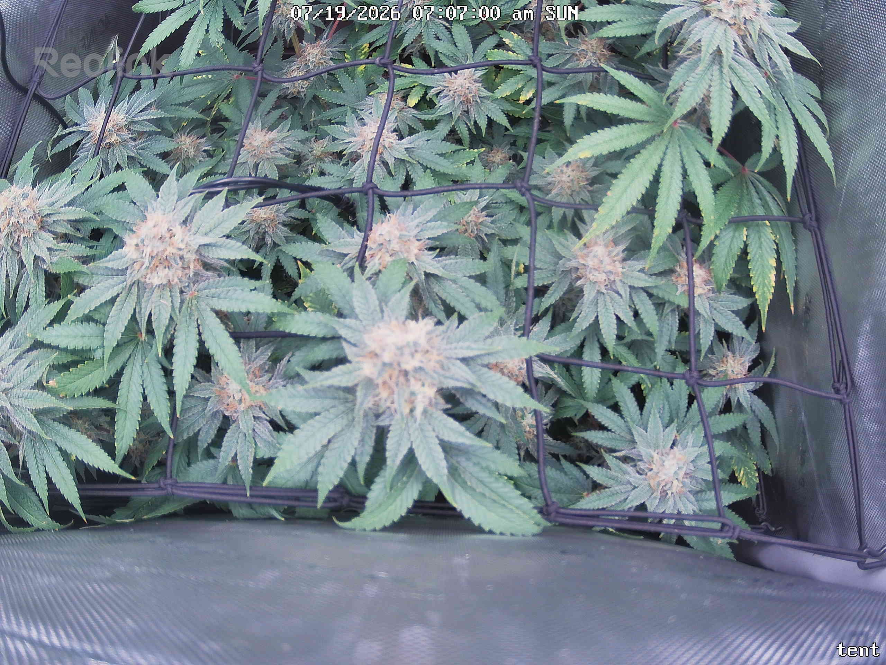
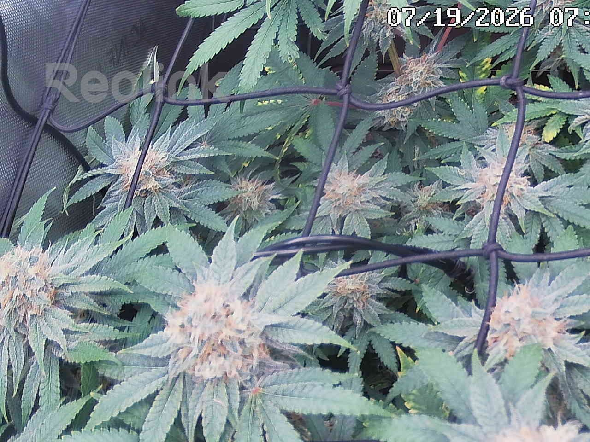
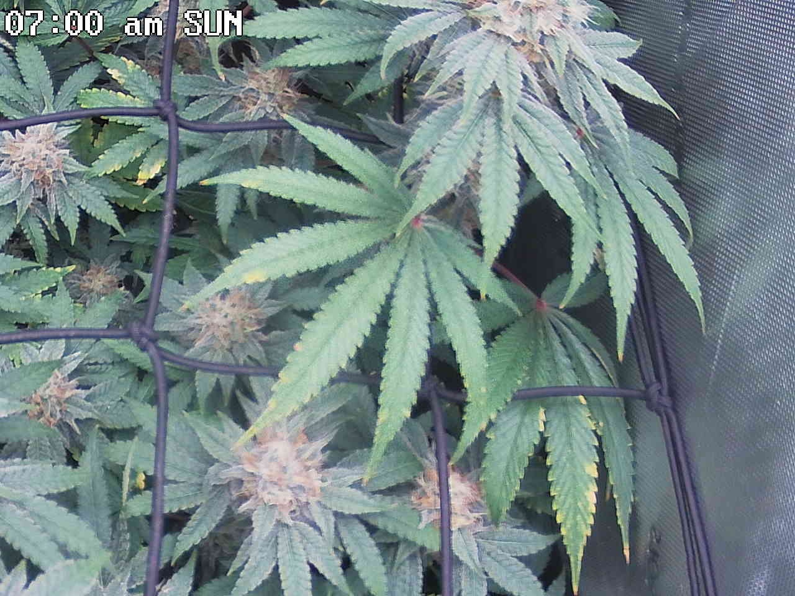
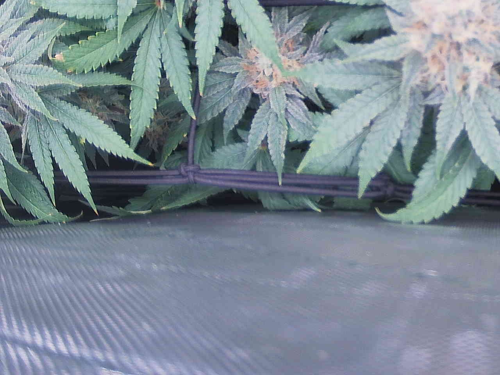
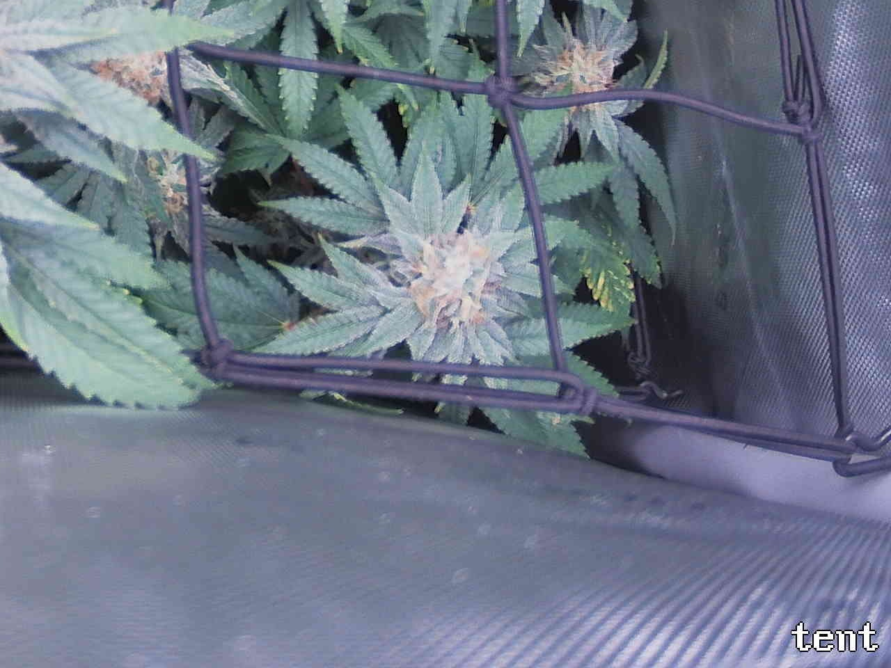

Per-quadrant analysis — the canopy shot was split into a 2x2 grid and each region compared against the previous day.
The plant is healthy and on-track for late flower (~day 46): all four quadrants are Status OK with dense, frosty colas, browning/amber pistils indicating ongoing ripening, and no pests, webbing, powdery mildew, gray mold, tacoing, or water-stress droop anywhere. Day-over-day the canopy is essentially stable — the reduced canopy coverage and increased floor exposure in both bottom quadrants read as camera-angle/framing shifts rather than plant decline, and the blue/violet cast in bottom-right is a white-balance artifact (it tints non-plant surfaces equally), not bleaching. The one recurring finding across every tile is marginal/tip yellowing on older interior/lower fan leaves, consistently attributed to normal late-flower senescence but with a concurrent potassium draw that cannot be excluded from photos; it appears stable and confined to lower/interior leaves in all four frames, so no quadrant is marked ATTENTION. The single most important action is passive monitoring: confirm the senescence pattern stays flat and does not climb into the tops or shift to a K-deficiency margin pattern on upper leaves — no intervention is warranted now.
Bud sites (whole plant, estimate): 15-24
Bud sites: 2-3
Bud sites: 3-5